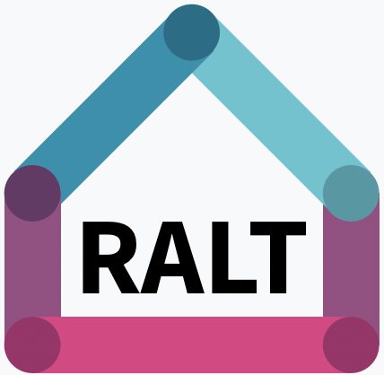

Control
(current)
Sensor Status
Sensor Test
Status
Target Topics
These are the topics that RALT Signalman will attempt to record. It is not a guarantee that they are online. Validate that your topics are available using
rostopic list
on the host.
Recording Status
Not recording.
Container Status
Bag Files
None.
None.
None.
Video Files
None.
None.
None.
Control
Manual Recording
Start
Stop
Activity Recording
Prepare Cold Meal
Prepare Hot Meal
Prepare Cold Drink
Prepare Hot Drink
Setting Table
Eating (Table)
Washing Dishes
Cleaning (Kitchen)
Working (Table)
Watching TV
Reading (Sofa)
Toileting
Showering
Dressing
Reading (Bed)
Sleeping
Stop
Merge Bag Files
Merge